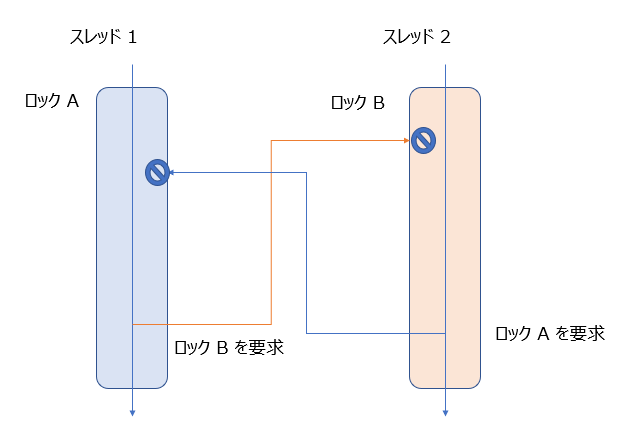

こんにちは、Japan Developer Support Core チーム 平田 a.k.a ぴろとです。本日は ProcDump を使用して、アプリケーションのダンプの採取を行う方法についてご案内をさせていただきます。サポート部門で以前は、adplus というツールを利用することが多かったのですが、最近は、ProcDump をご案内することが多くなってきました。adplus は、Debugging Tools for Windows に同梱されるツールになっています。そのため、あらかじめ Windows SDK を別途インストールをしていただいた環境から、WinDbg のインストールをするための再頒布パッケージを採取環境にインストールが必要になってしまうため、情報採取までの手順が長いためとなります。
ProdDump の入手方法について
ProcDump は、Sysinternal Suites のツールになります。全部一括でダウンロードをする場合は、Sysinternal Suites のハイパー リンクをクリックし、ダウンロードをください。便利なツールが沢山あります。
個別にダウンロードをすることも可能です。ProcDump v10.0 こちらからダウンロードを行い、Zip ファイルを展開したものを任意のフォルダーに保存します。
ハング ダンプの採取について
ハングダンプは、アプリケーションがハング状態や無応答になった場合に採取を行うものとなります。ハング状態となるパターンはいくつかあります。考えられるシナリオについては、デッドロックといったパターンです。これは、ロック A と ロック B をあるスレッドは、A -> B の順番にとって、他方のスレッドは、 B -> A の順番にロックをとるシナリオです。
この場合、スレッド1 は、ロック A を取得後、ロック B の取得を行いに行きます。しかしながら、スレッド 2 では、ロック B をすでにとっている状況で、ロック A の開放待ちになっているといったことが発生し得ます。

アプリケーション自体はクラッシュはしませんので、とるタイミングは事象が発生している最中にとる必要があります。
管理者として、起動したコマンドプロンプトにて、ダウンロードをした ProcDump を使って以下のコマンドを実施します。基本的には、EXE の名前だけで入力が可能ですが、同一のプロセス名のプロセスがある場合には、プロセス ID で設定します。
procdump -ma <プロセスの EXE 名>
procdump -ma <プロセス ID>
コマンド例 (notepad.exe (PID:1234) だった場合)
procdump -ma notepad.exe
procdump -ma 1234
デッドロックの場合は、ユーザーモードの時間が割り当たらないことがほとんどです。解析を進めてデッドロックではない場合には、インターバルを設けて何度か取得をして複数のダンプを採取します。解析をする際には、!runaway コマンドで CPU 時間を確認します。もし狙ったスレッドが動いている場合には、無限ループ等も考慮します。
クラッシュ ダンプの採取について
こちらは、アプリケーションがクラッシュした場合に採取をするものになります。そのため、クラッシュするオペレーションがわかっている場合には、再現をする前に、ProcDump をアタッチしておく必要があります。アタッチしている状況にて、アプリケーションで例外が発生すると、ダンプを取得し、アプリケーション自体は終了します。-e オプションは、ハンドルされない例外が発生した場合に出力をするという設定です。なお、例外ハンドラーにてハンドリングされてしまうタイプの例外を検出したい場合には、-e 1 といった形で、1st change 例外を出力するようにします。
-e Write a dump when the process encounters an unhandled exception.
Include the 1 to create dump on first chance exceptions.procdump -e -ma <プロセスの EXE 名>
procdump -e -ma <プロセス ID>
コマンド例 (notepad.exe (PID:1234) だった場合)
procdump -e -ma notepad.exe
procdump -e -ma 1234
1st chance / 2nd chance という用語がでてきています。1st chance 例外は、エラーハンドリングをされることで回復を期待される例外になります。それに比べ、2nd chance 例外は、エラーハンドリングがされていない例外または、回復処理で回復できないため、再度例外を発生した場合になります。
今回はここまでとなります。
本ブログの内容は弊社の公式見解として保証されるものではなく、開発・運用時の参考情報としてご活用いただくことを目的としています。もし公式な見解が必要な場合は、弊社ドキュメント (https://docs.microsoft.com や https://support.microsoft.com) をご参照いただくか、もしくは私共サポートまでお問い合わせください。